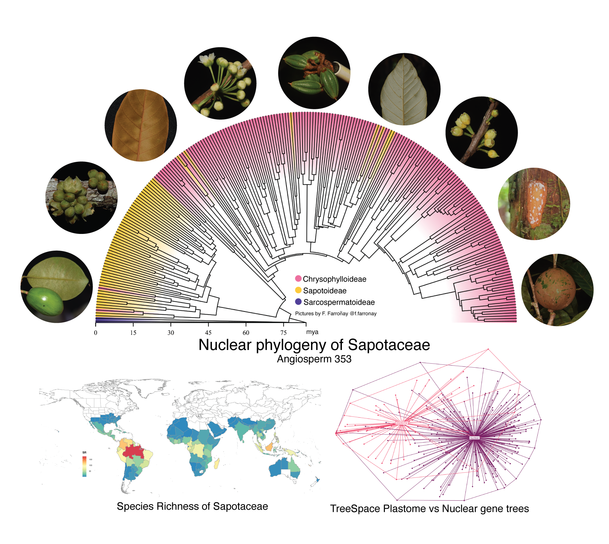
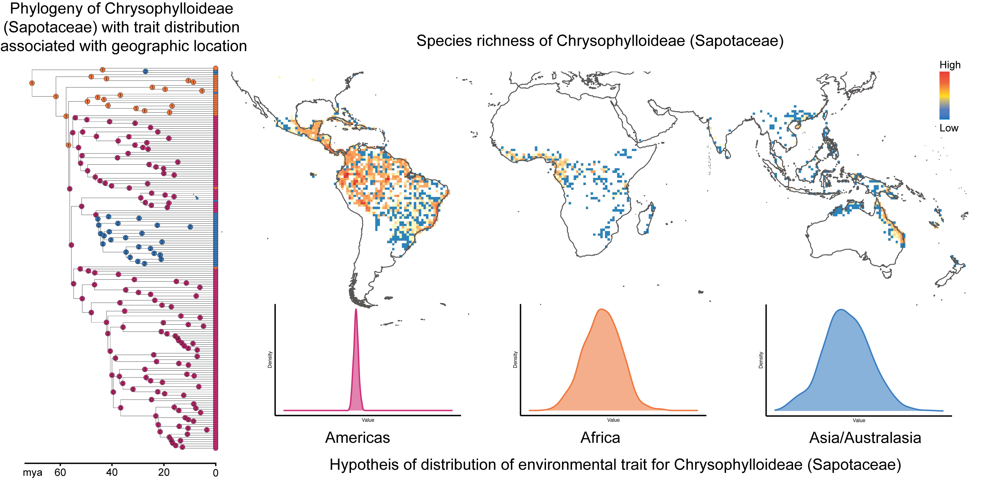

Research Interests
I work across three main areas that explore how species interactions shape trait evolution and diversification in the tropics

Phylogenomics and Biogeography of tropical plants
My research focuses on the ecology and evolution of tropical plants, using the plant family Sapotaceae as a model group. Drawing on a range of phylogenomic methods, including reconstructing phylogenetic trees from nuclear and plastome sequence data, assessing conflict between gene trees and species trees, and inferring historical biogeography, I aim to elucidate the origin and movement of plant lineages throughout their evolutionary history in the tropics.

The role of biotic factors and environment in the generation and maintenance of tropical biodiversity
A central challenge in ecology and evolutionary biology is understanding the patterns of species richness and distribution observed on Earth today. Numerous patterns of biodiversity distribution have been described, and one point of broad agreement is that species are not evenly distributed across the globe. A major component of my work addresses the role of ecological processes in shaping these broad-scale patterns of biodiversity. More specifically, I explore how species interactions and trait evolution shape present-day diversity in the tropics across different spatial and temporal scales, using methods ranging from phylogenetic comparative approaches to quantifying chemical defensive traits in Sapotaceae species.

Linking Evolutionary History to Conservation Action
Global biodiversity is under extreme pressure from human activities, with roughly 40% of plant species now threatened with extinction. This makes species and area prioritization one of the biggest challenges in conservation biology, particularly in resource-limited, threat-heavy regions like the tropics. A significant part of my work aims to inform conservation action by combining evolutionary history with conservation prioritization, primarily using herbarium specimens as a data source.
Previous experience
Climatic change and naturally fragmented habitats
Advisor: Dr. Thais N. C. Vasconcelos
One of the greatest challenges in conservation science is defining priority areas for biodiversity preservation under growing anthropic pressure and forecasted climate change. I modeled species distributions across the Espinhaço Range, a naturally fragmented mountain chain in eastern Brazil with exceptional species richness and endemism, to assess how different climate-change scenarios will affect its endemic flora. This work corroborates earlier studies suggesting the region's endemic species are under severe threat.
Evolutionary distinctiveness and "sky island" systems
Advisor: Dr. Thais N. C. Vasconcelos · Co-advisor: Dr. Eimear NicLughadha
Mountain chains behaving as "sky islands" host striking biodiversity, with high species richness and endemism arising from rapid, recent radiations. Using Evolutionary Distinct and Globally Endangered (EDGE) and phylogenetic diversity methods on the Chamaecrista ser. Coriaceae (Fabaceae) clade, I examine how conservation priorities can better incorporate evolutionary history in the Brazilian campo rupestre ecosystem. Supported by FAPESP.
Assembly processes in dominant Amazonian tree communities
Advisor: Dr. Christopher Dick · Co-advisor: Dr. Stephen Smith
I study phylogenetic community structure in the Chrysophylloideae subfamily of Sapotaceae to understand local patterns of coevolution and coexistence, asking how clades assembled in the Neotropics, what roles niche conservatism and divergence played in colonizing the Americas, and how plant–insect interactions shape biotic niche differences among coexisting species. This combines phylogenetic and biochemical analyses to explore the drivers of diversification in a dominant Amazonian tree family.